Rede de Computadores-SENAC
No ambiente atual, a conectividade é essencial para a comunicação e o fluxo de informações. Reconhecendo essa necessidade, os alunos do curso de Técnico em Informática do SENAC se uniram para desenvolver um projeto voltado à montagem de um laboratório de redes de computadores. Este projeto não apenas visa criar uma infraestrutura de rede robusta, mas também proporcionar uma experiência prática aos alunos, permitindo que eles apliquem os conhecimentos teóricos adquiridos ao longo do curso.
O laboratório de rede foi projetado para simular um ambiente real de trabalho, onde os alunos puderam aprender sobre a configuração de roteadores, switches e a implementação de serviços de rede. A experiência adquirida nesse projeto é fundamental para a formação de profissionais qualificados, prontos para enfrentar os desafios do mercado de trabalho na área de tecnologia da informação.
 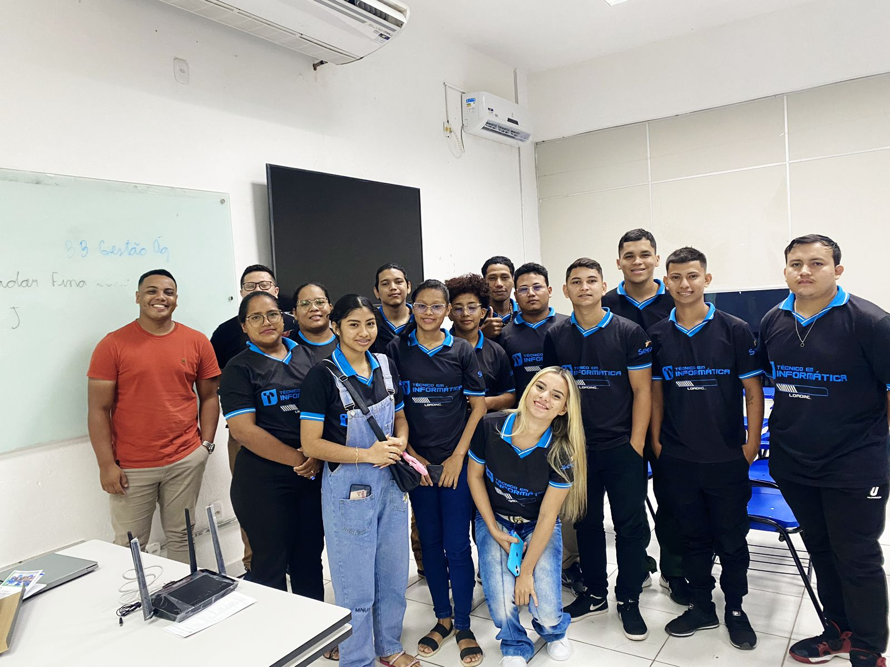
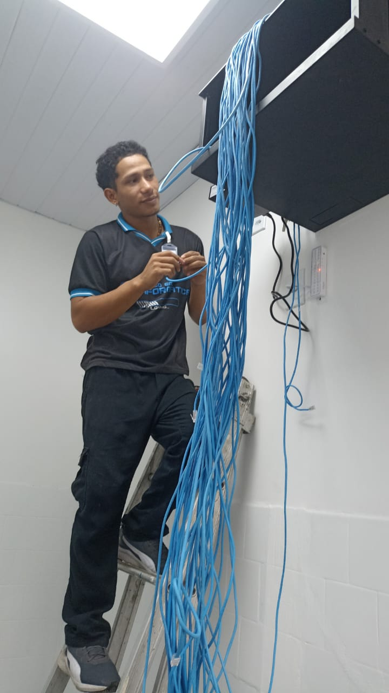
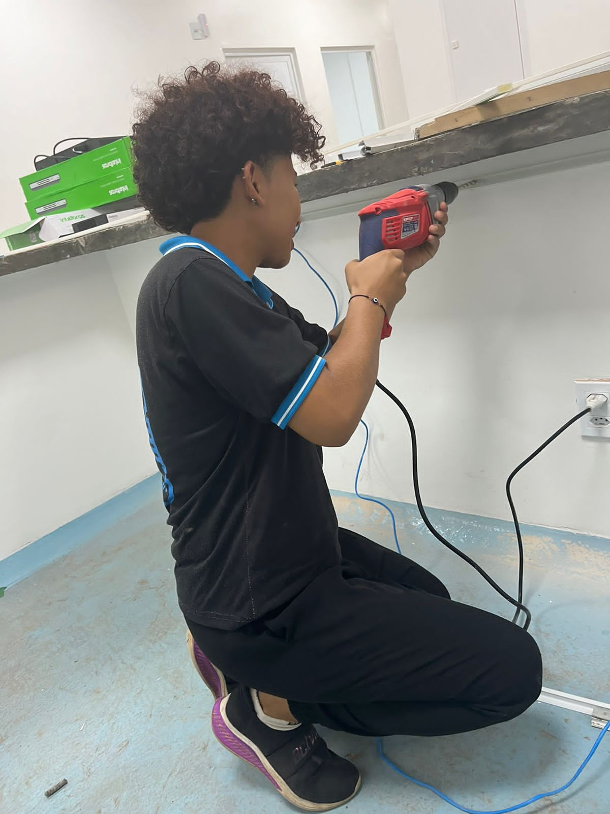
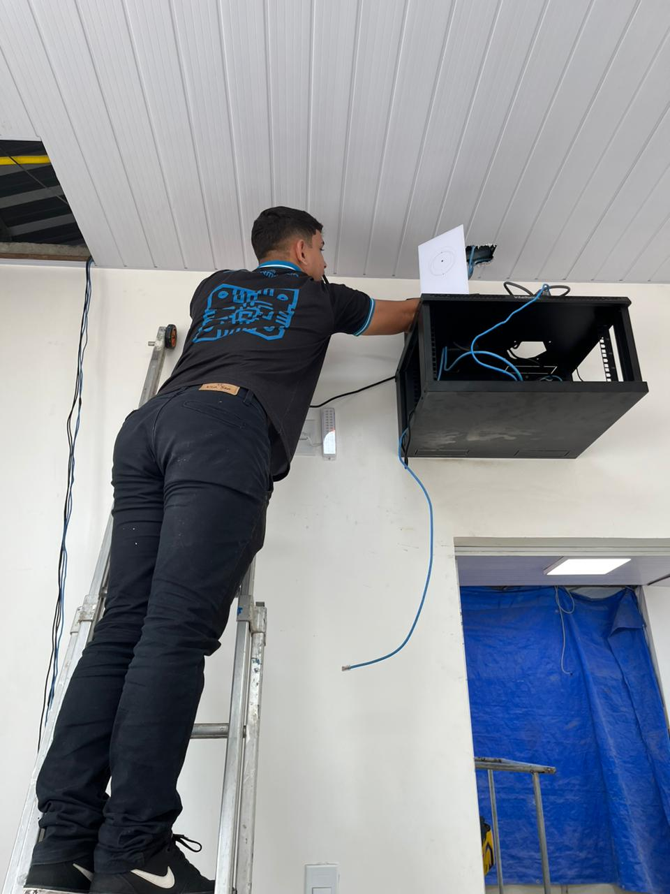
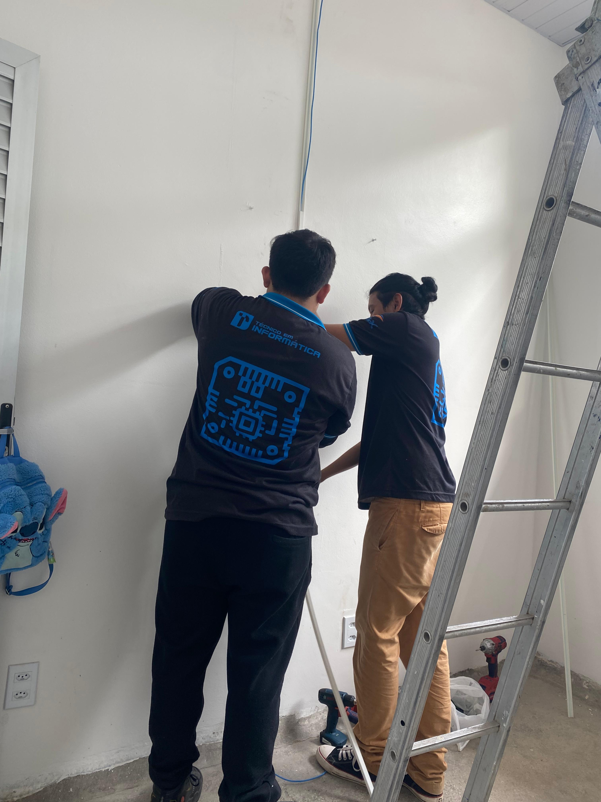
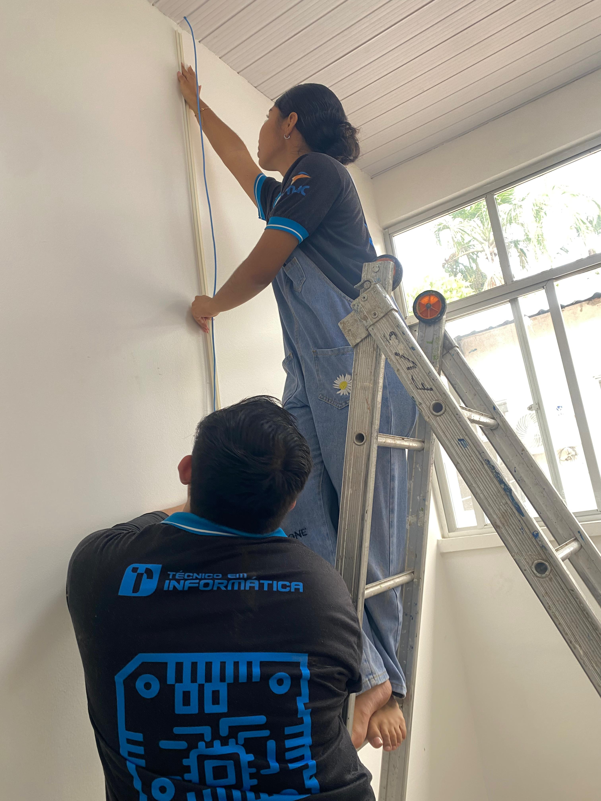
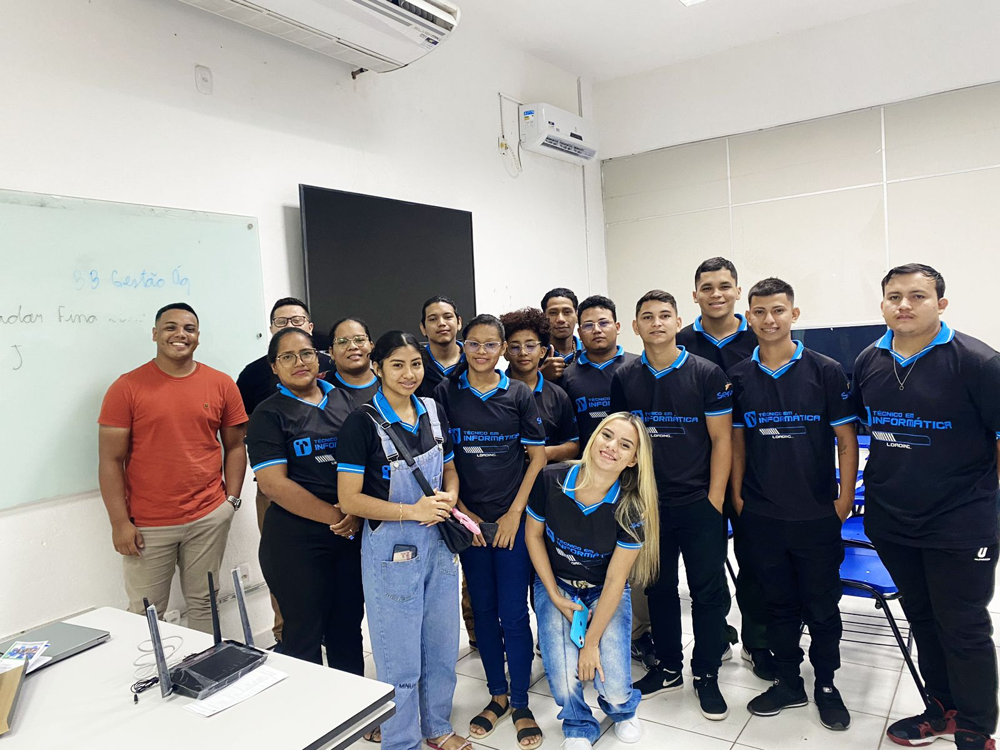
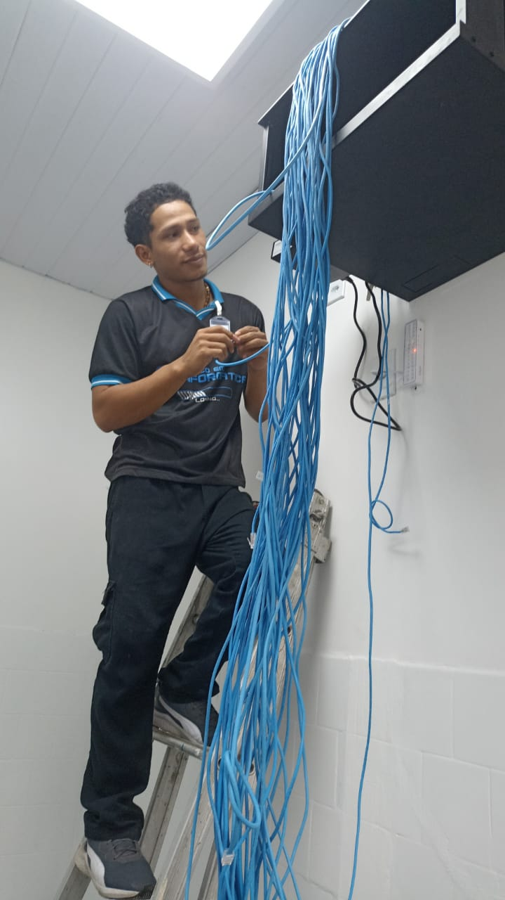
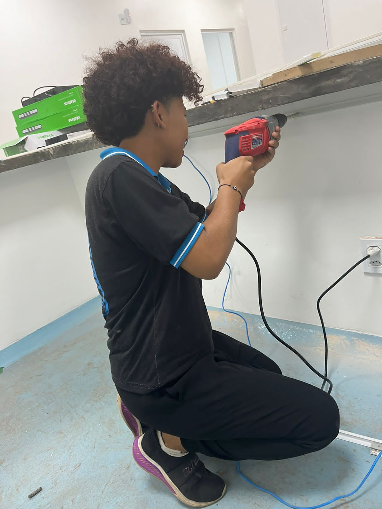
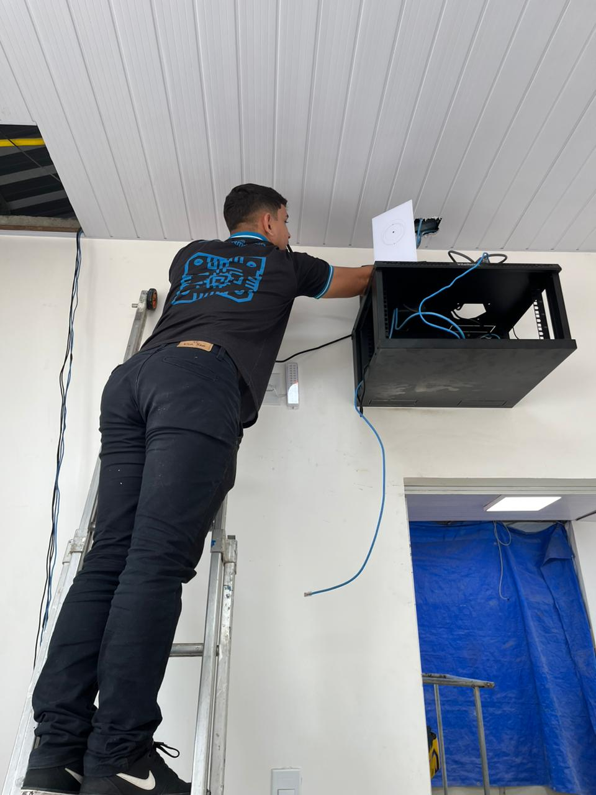
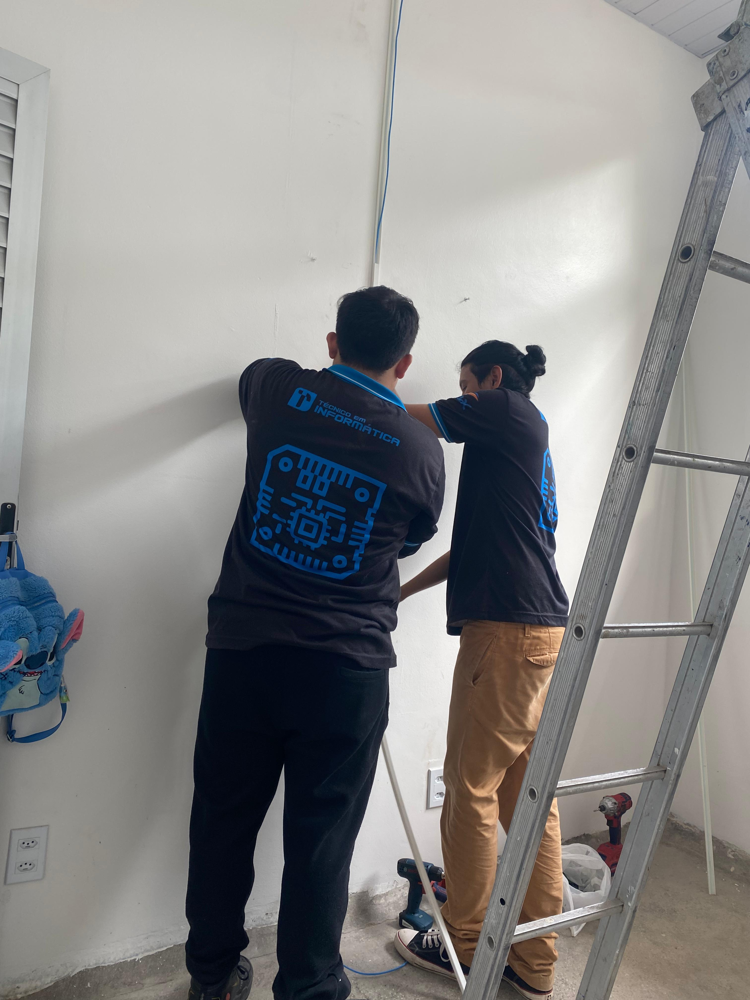
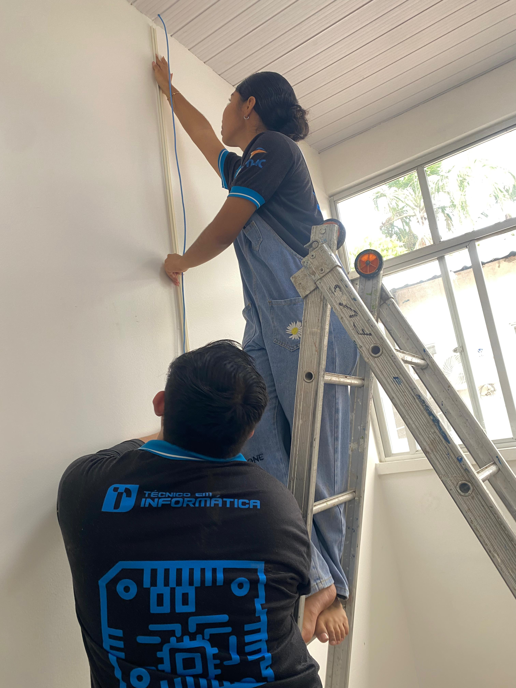